Photography has been my most channeled creative medium for most of my life. I began shooting in Fourth Grade when I convinced my parents to buy me a joint-birthday/Christmas DSLR. They bought me my beloved Canon T3i and the rest is history.
Since then, I have made explorations in analog film and analog cinematography. In 2022, I took a white photography course under Julia Dean, who studied under Bernice Abbot. In this course, she and I became somewhat acquainted, and I learned priceless information regarding photography composition, developing tactics, etc.
Here, is a catalog of my favorite work. You’ll soon see that my photographic style is more journalistic, depicting the elegance and grace in everyday life.

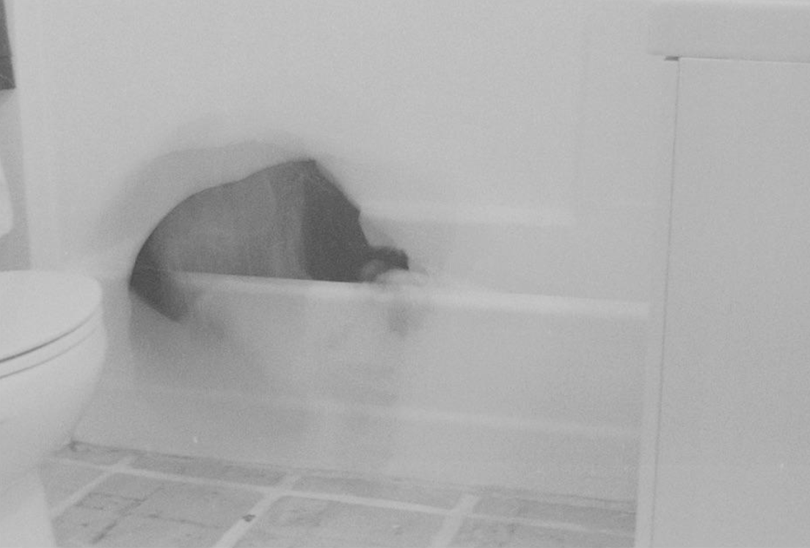
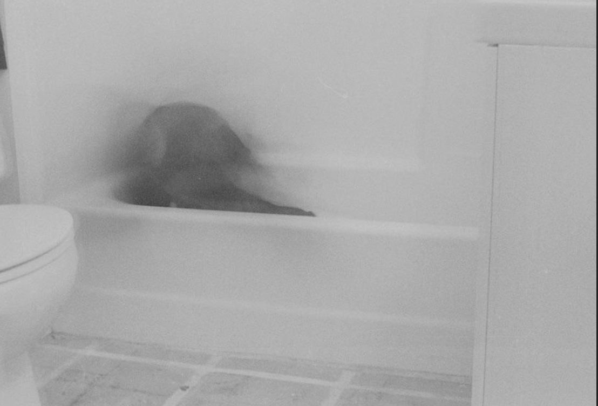
I Don't Want To Change.
In a personal project aimed at portraying the visual representations of my innermost traumas, largely influenced by my vivid dreams, I begun by exploring my fear of change. It all began within the confines of a bathtub; As the water gradually settled, a comforting warmth enveloped me. However, with the passing of time, the once soothing water transformed into an icy chill, while my legs became immobilized. Trapped in this frigid prison, I desperately struggled to free myself from the confines of the tub. It was only when the torment of stagnation intensified to unbearable levels that I mustered the courage to initiate change.
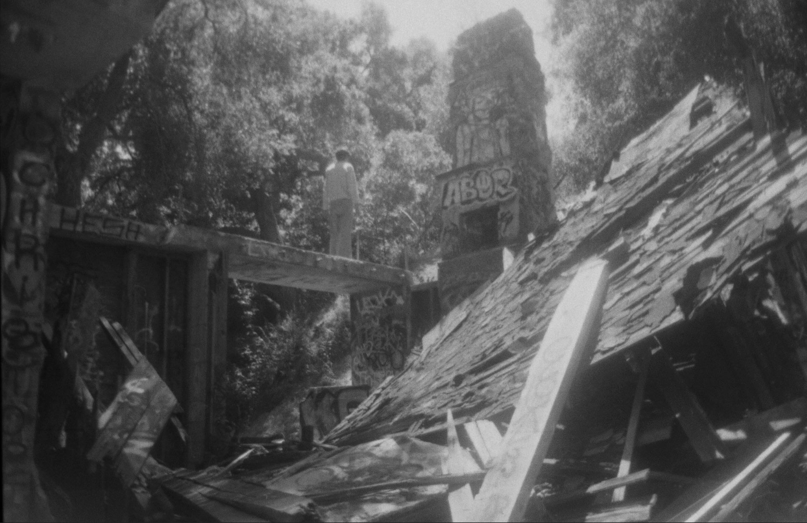
Paradise: Lost.
Continuing my ongoing project delving into the depths of my traumas, the second piece accentuates my profound fear of instability. Growing up in a household predominantly led by my single mother, financial struggles became a constant companion. We frequently found ourselves uprooted and forced to relocate. It was around the fifteenth move that a recurring dream emerged, haunting me relentlessly. In this dream, I would revisit the home that was once a sanctuary for my family, only to find it in ruins—a reflection of the shattered state of my own family. The very place that once provided solace and security had been transformed into a desolate wasteland.
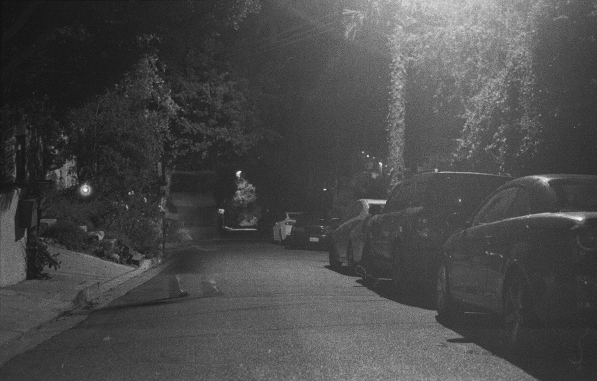
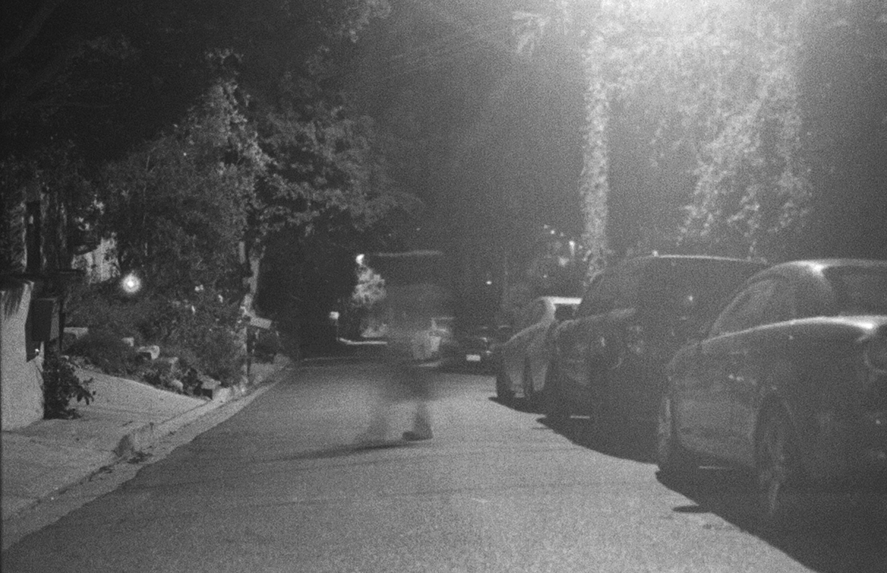
Please Don't Go.
In a personal project aimed at portraying the visual representations of my innermost traumas, largely influenced by my vivid dreams, I begun by exploring my fear of change. It all began within the confines of a bathtub; As the water gradually settled, a comforting warmth enveloped me. However, with the passing of time, the once soothing water transformed into an icy chill, while my legs became immobilized. Trapped in this frigid prison, I desperately struggled to free myself from the confines of the tub. It was only when the torment of stagnation intensified to unbearable levels that I mustered the courage to initiate change.
Portrait Photography:


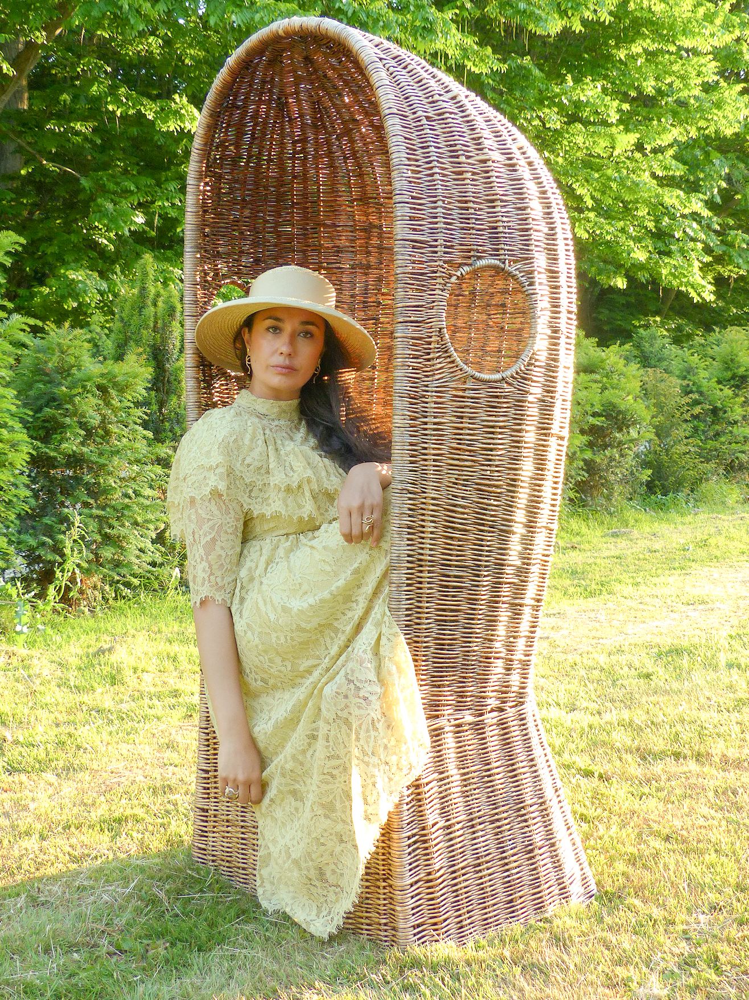
Landscape/Candid Photography:
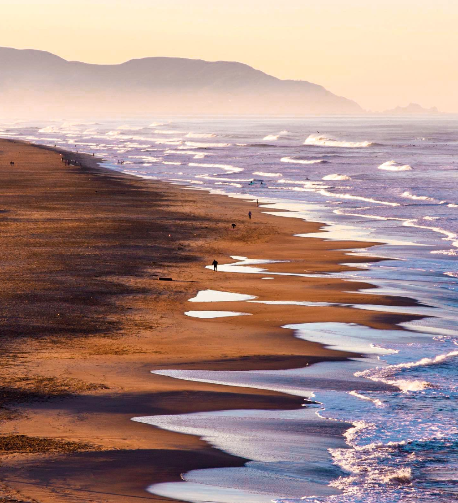
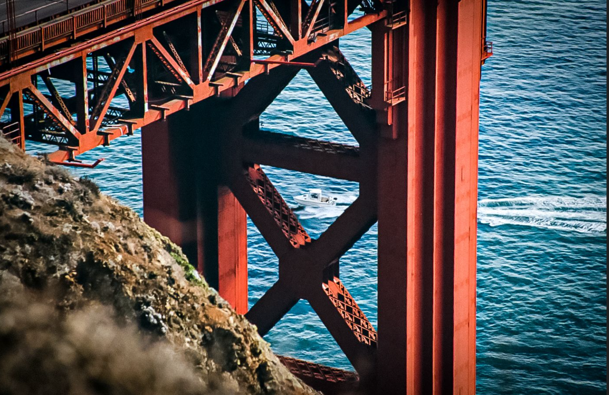
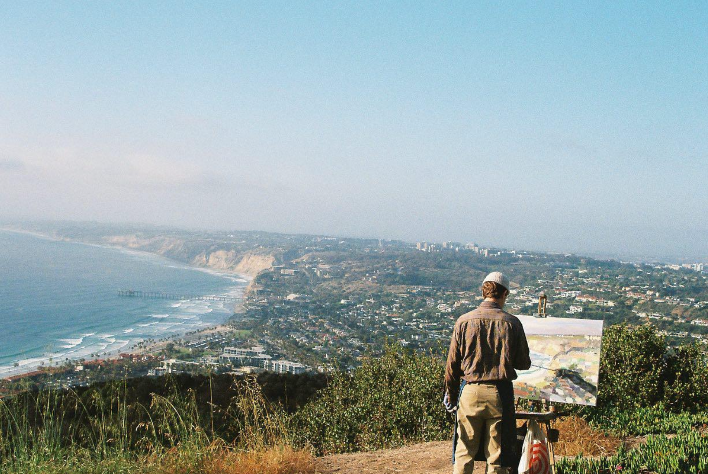
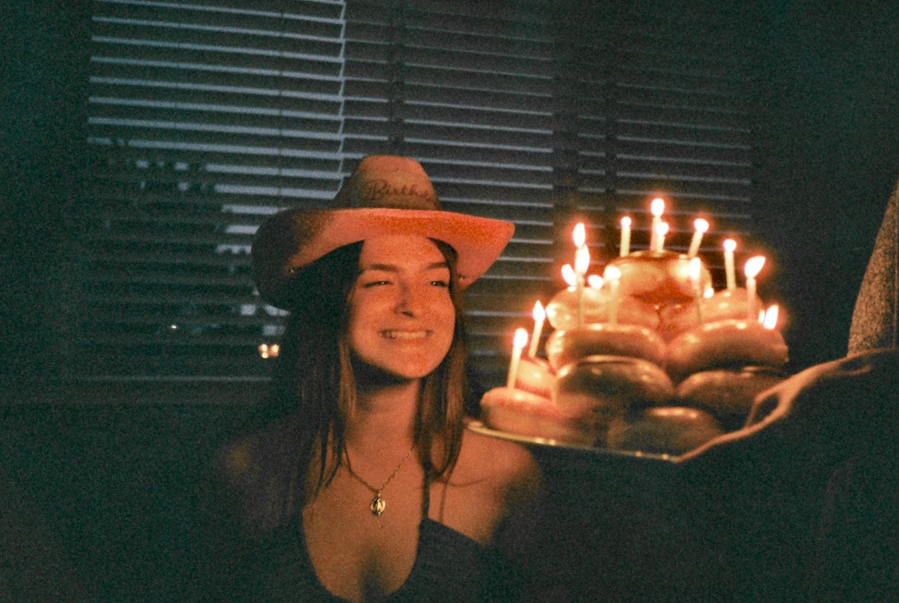
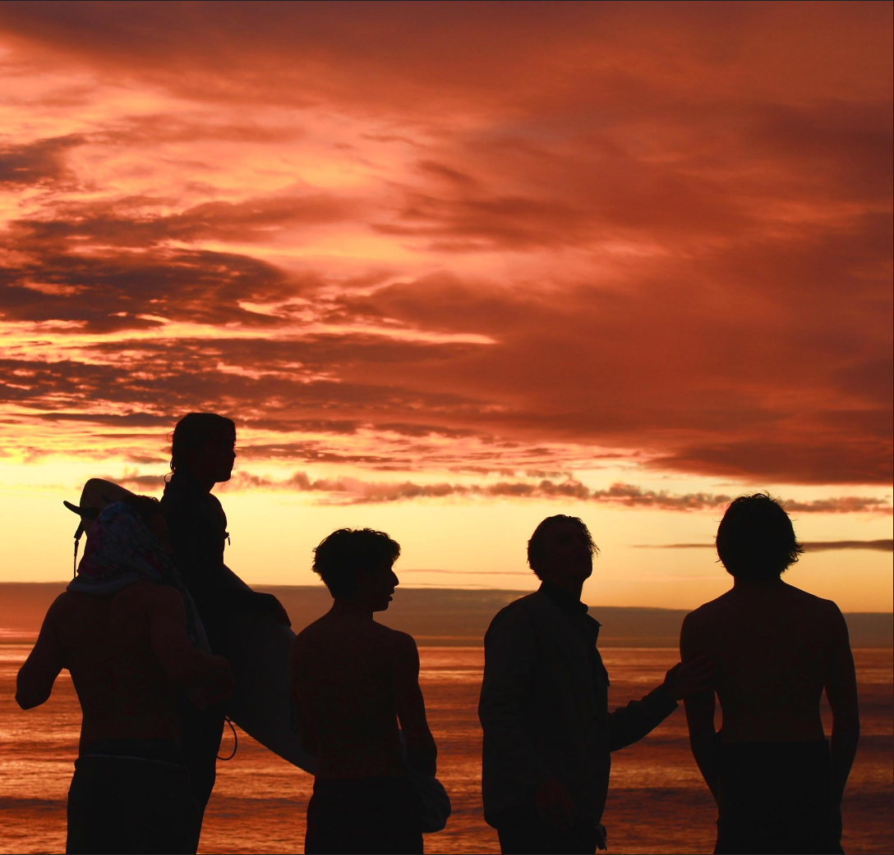
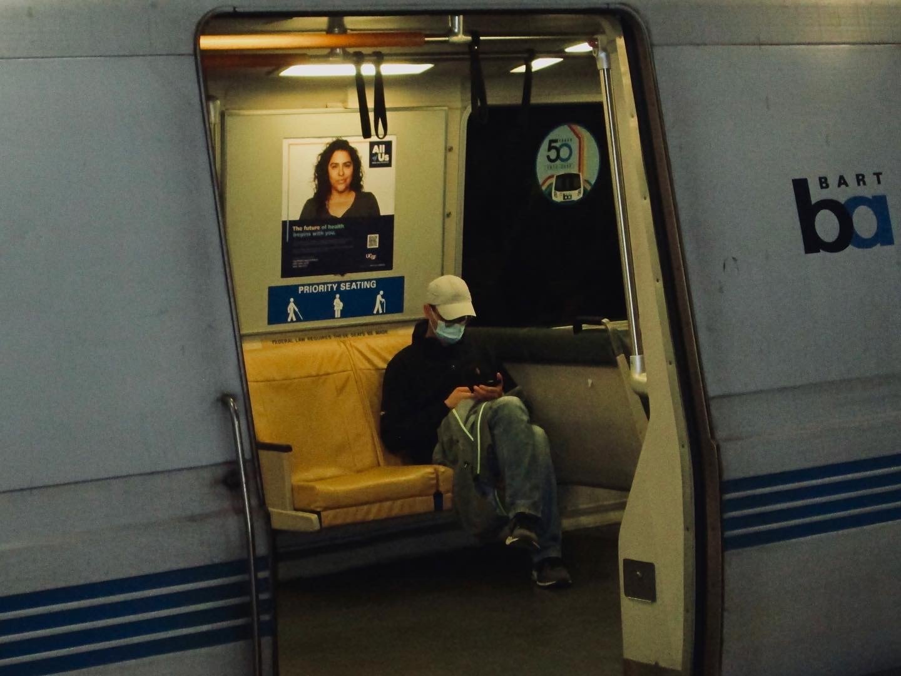
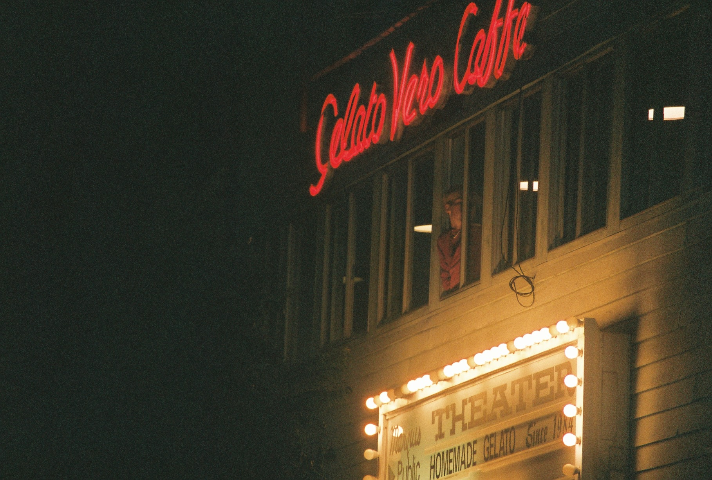